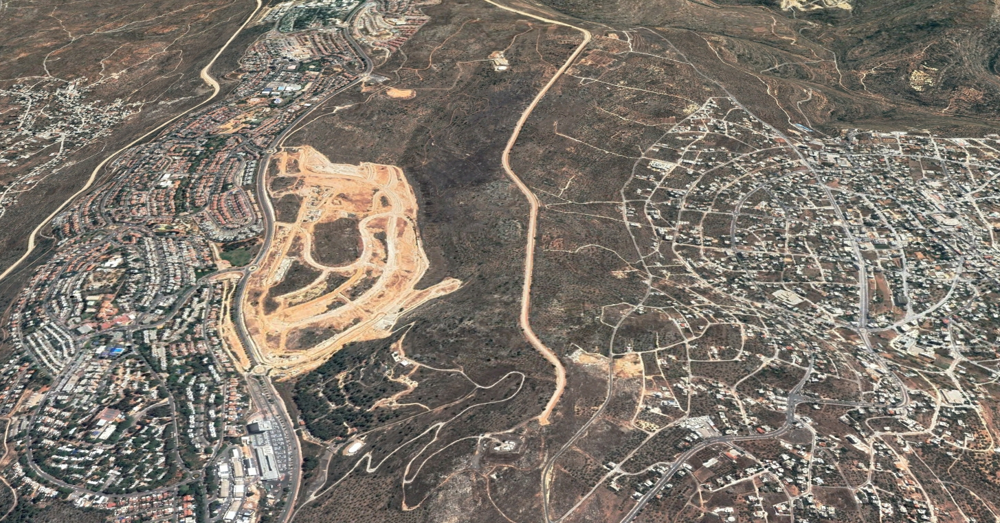
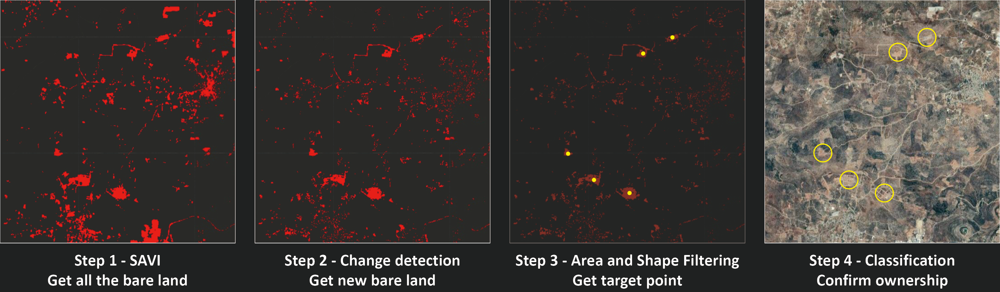
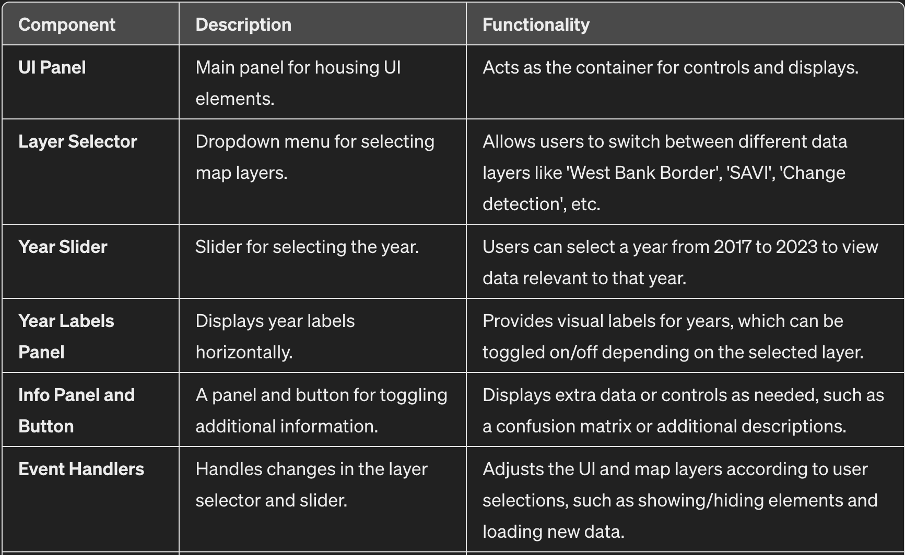
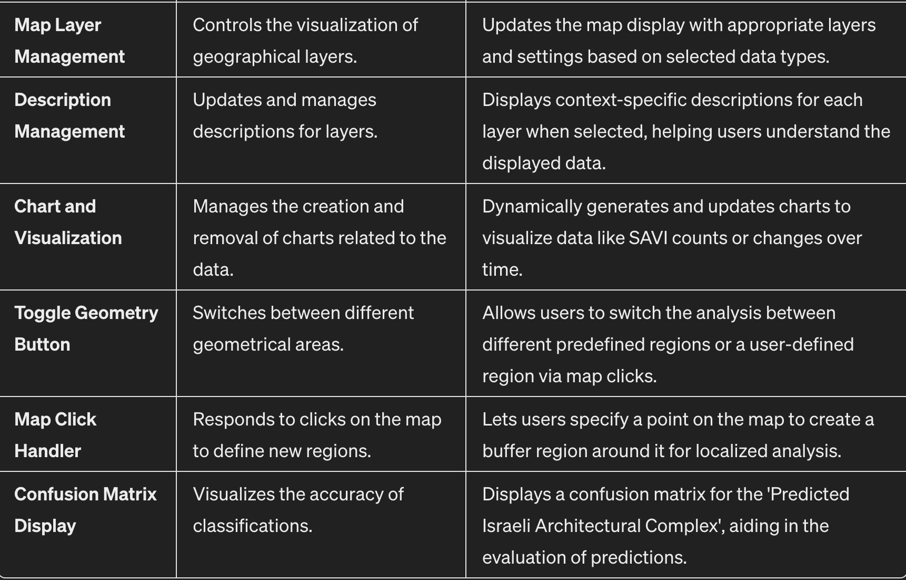

Israeli Settlement Identification in the West Bank

Project Summary
The hot war in Gaza is well known in the Israeli-Palestinian conflict, but the slow erosion of the West Bank has received little attention.
In the West Bank of the Jordan River, Israel continues to encroach on Palestinian land by establishing illegal outposts, transforming them into settlements, and eventually legalizing them. The purpose of this application is to detect these new settlements.
Many journalists hope to mitigate the situation of Palestinian victimization through early intervention and raise public awareness about the status of Palestine beyond Gaza. However, sometimes they manually search for these targets on Google earth. We hope to help them quickly locate these targets through this application.
Problem Statement
The purpose of this application is to use satellite imagery to find and mark new Israeli settlements in the West Bank. The target has certain characteristics. Finding a series of methods to filter and mark them with the features is the main problem the application needs to solve.
For target users, the application should also provide a user interface in which they can quickly query the location and number of these newly emerged territorial encroachments.
Through this application, we hope that it can make a small contribution to arousing a more comprehensive public understanding of the Palestinian-Israeli conflict.
End User
-Journalists, researchers and international organizations
Many newly Israeli settlements are illegal. Usually when settlements develop to a certain scale, Israel will declare them legal. Early detection can help the international community intervene earlier. Some reporters did a manual blanket search through Google Earth. We hope this helps them resolve the issue quickly.
- Public
The public can also use the app to understand how Israel has invaded Palestinian land, ultimately leading to the pockmarked borders of the area’s controlled areas.
This news article provides a detailed look at the Israeli-occupied territories.
Data
Main data:
- Harmonized Sentinel-2 MSI: MultiSpectral Instrument, Level-2A. (Surface Reflectance)
- The resolution is 10m.
- The time span is 2017-03-28 – Present.
Although our main purpose is to detect only the latest Israeli settlements, to use machine learning to distinguish settlement ownership, the larger the data set, the better. Therefore, we use all available years for identification and training. To make full use of the data, we cut the data by year with 04-01 as the boundary, and then preprocessed the data of each year. For example, the data in 2023 corresponds to 2023-04-01 - 2024-04-01.
Other data:
Methodology
This application initially uses the SAVI to identify target land types, then employs change detection to identify newly cultivated land plots that appear each year. These plots include changes in desert areas and minor agricultural land developments. Therefore, it is necessary to use shape and area filtering to select plots of specific areas and shapes, and subsequently pinpoint their central locations. Finally, we attempt to distinguish whether these plots belong to Israel through machine learning.
- Feature Selection(NDVI, SAVI), Land Cover Classification(Random Forest)
- Change detection(difference, T-test)
- Morphological Analysis, Area and Shape Filtering
- Classification(Support Vector Machine, Random Forest)

Interface
The main function is to provide target points to help users quickly locate the latest settlements or outposts. The left side is the operation panel. Users can select “New Israeli Settlement Locations” button and a specific year to obtain the target position for that year. We also provide quantitative statistics and line charts to help users understand their changing trends.
Additionally, users can select other options such as “West Bank Border”, “Control Areas”, “SAVI”, etc. We also provide layers of some background and analysis processes to help users better understand the working principle of the application. Users can freely view these layers, and look for image features that interest them.
The Application
How it Works
Part 1: (Soil Adjusted Vegetation Index) SAVI
First, we extract satellite images from Sentinel-2 and filtering out cloud-obscured ones. These images are then subjected to machine learning analysis to identify surface features such as roads, farmland, forests, cities, and bare land. Various feature collections are imported to provide essential geographical context, including West Bank borders, Palestinian and Israeli-Palestinian control areas, and points indicating illegal appropriation.
// Import West Bank borders.
var westbank = ee.FeatureCollection("projects/ee-casa0025insightexplorers/assets/WestBankBorder");
// Import Palestinian control area.
var areaA = ee.FeatureCollection("projects/ee-casa0025insightexplorers/assets/areaA");
// Import Israeli-Palestinian control area.
var areaB = ee.FeatureCollection("projects/ee-casa0025insightexplorers/assets/areaB");
var redpoint=ee.FeatureCollection("projects/ee-casa0025insightexplorers/assets/illegal_appropriation")
// Date range.
var start='2023-04-01';
var end='2024-04-01';
// Bands.
var bands = ['B2','B3','B4','B5','B6','B7','B8','B8A','B11','B12'];
// Filter the Sentinel-2 collection and select the less cloudy image.
var sentinel = ee.ImageCollection('COPERNICUS/S2_HARMONIZED')
.filter(ee.Filter.date(start, end))
.filter(ee.Filter.lt('CLOUDY_PIXEL_PERCENTAGE', 10))
.mean()
.select(bands);
// Visualization of sentinel.
var sentinel_settings = {
min: 0.0,
max: 3000,
bands:['B4', 'B3', 'B2'],
opacity:1
};
Map.addLayer(sentinel.clip(AOI), sentinel_settings, 'Sentinel',false);
// Visualization of westbank borders.
var westbank_settings = {
color: 'FFFFFF',
fillColor: '00000000',
};
Map.addLayer(westbank, westbank_settings, 'West Bank Border');
// Study area.
var study_area = areaA.merge(areaB);
var study_geometry = study_area.union().geometry();
var buffered_geometry = study_geometry.buffer(200);
Map.addLayer(buffered_geometry, {color: 'yellow'}, 'Study Area',false);Two crucial functions are defined: one calculates the Soil Adjusted Vegetation Index (SAVI), and the other retrieves yearly Sentinel-2 images for analysis over time.
// Function for calculating SAVI.
function SAVI(image) {
// Clip area.
var sentinel_westbank = image.clip(westbank);
var sentinel_study = image.clip(buffered_geometry);
// Calculate SAVI.
var savi = sentinel_westbank.expression(
'(NIR - RED) / (NIR + RED + 0.5) * (1 + 0.5)', {
'NIR': sentinel_westbank.select('B8'),
'RED': sentinel_westbank.select('B4')
}
).rename('SAVI');
var barelandSAVI = savi.lt(0.2);
return barelandSAVI;
}
function YearlyImages(startYear, endYear, dateSuffix, bands) {
// Initialize an empty dictionary to store a set of images by year.
var yearly_sentinel_images = ee.Dictionary();
// Loop through each year from startYear to endYear.
for (var year = startYear; year <= endYear; year++) {
var start = year + dateSuffix;
var end = (year + 1) + dateSuffix;
var sentinel = ee.ImageCollection('COPERNICUS/S2_HARMONIZED')
.filter(ee.Filter.date(start, end))
.filter(ee.Filter.lt('CLOUDY_PIXEL_PERCENTAGE', 10))
.mean()
.select(bands);
yearly_sentinel_images = yearly_sentinel_images.set(year.toString(), sentinel);
}
return yearly_sentinel_images;These yearly images are iterated over, with the SAVI function applied to each, and the resulting bare land distribution is visualized on the map, offering insights into land use changes.
// Create yearly images.
var sentinel_2017_2023 = YearlyImages(2017, 2023, '-04-01', bands);
// Iterate over the dictionary and apply SAVI function.
var savi_2017_2023 = ee.Dictionary();
var keys = sentinel_2017_2023.keys();
keys.getInfo().forEach(function(key) {
var image = ee.Image(sentinel_2017_2023.get(key));
var savi_image = SAVI(image);
savi_2017_2023 = savi_2017_2023.set(key, savi_image);// savi_2015_2023 is the dictionary for Change detection.
});
// Visualization.
var visParams = {
min: 0.0,
max: 1.0,
palette: ['2a2A28', 'FF0000']
};
var keys = savi_2017_2023.keys();
keys.getInfo().forEach(function(key) {
var savi_image = ee.Image(savi_2017_2023.get(key));
Map.addLayer(savi_image, visParams, 'SAVI_' + key,false);
});Additionally, a function called calculateChange is defined, which computes differences in bare land between consecutive years, aiding in identifying new roads or settlements. This function iterates from 2017 to 2022, analyzing each yearly pair and visualizing the changes for deeper understanding.
// Function to calculate change between two images
function calculateChange(image1, image2, year1, year2) {
// Calculate the difference between the two images
var diff = image2.subtract(image1).abs(); // Taking absolute value of the difference
// Visualize the change
var layerName = 'Change ' + year1 + ' to ' + year2;
Map.addLayer(diff, {min: 0, max: 0.5, palette: ['2A2A28', 'FF0000']}, layerName);
}
// Iterate over the years and calculate change
for (var i = 2017; i < 2023; i++) {
var image1 = ee.Image(savi_2017_2023.get(i.toString()));
var image2 = ee.Image(savi_2017_2023.get((i + 1).toString()));
calculateChange(image1, image2, i, i + 1);
}Part 3: Change filter
This section is specifically designed to screen, monitor, and analyze areas where the Soil Adjustment Vegetation Index (SAVI) has decreased over several consecutive years. It starts by identifying areas between adjacent years where the SAVI value has decreased, in order to determine regions of vegetation loss, especially those transitioning from above 0.2 in SAVI to below 0.2. After these changes are identified, the code applies specific filtering functions to exclude smaller patches, thereby reducing noise and errors to ensure the reliability and accuracy of the results. The filtered areas are displayed in red on the map for direct visualization and analysis. Moreover, the code vectorizes these areas and extracts centroids highlighted in yellow, which are crucial for further geospatial analysis. Ultimately, these centroids and areas are added to the map.
// ---------------------------Part 4: Change filter ---------------------------
// Filter out small patches based on connected pixel size.
function filterSmallPatches(image, minPixels) {
var connected = image.connectedPixelCount();
return image.updateMask(connected.gte(minPixels));
}
// Function to compare SAVI between two consecutive years, identify changes, and filter small patches.
function compareAndFilterYearlySAVI(yearlyImages, startYear, endYear, minPixels) {
for (var year = startYear; year < endYear; year++) {
var currentImage = ee.Image(yearlyImages.get(year.toString()));
var nextImage = ee.Image(yearlyImages.get((year + 1).toString()));
// Identify areas where SAVI decreased.
var transitionToRed = currentImage.gte(0.2).and(nextImage.lt(0.2));
// Filter out small patches from the identified areas.
var filtered_change = filterSmallPatches(transitionToRed, minPixels);
// Create a visualization layer to show these changes.
var changeVisualization = filtered_change.updateMask(filtered_change)
.multiply(255)
.toByte();
var changeParams = {
min: 0,
max: 255,
palette: ['000000', 'FF0000'] // Display changes in red.
};
Map.addLayer(changeVisualization, changeParams, 'Filtered Change to Barren ' + year + '-' + (year+1));
}
}
// Apply the function to compare and filter SAVI across years and visualize changes.
compareAndFilterYearlySAVI(savi_2017_2023, 2017, 2023, 100);
// Function to compare SAVI between two consecutive years, identify changes, filter small patches, and extract centroids.
function compareFilterAndExtractCentroids(yearlyImages, startYear, endYear, minPixels) {
var changeLayersDict = {}; // Dictionary to hold change layers
var centroidLayersDict = {}; // Dictionary to hold centroid layers
for (var year = startYear; year < endYear; year++) {
var currentImage = ee.Image(yearlyImages.get(year.toString()));
var nextImage = ee.Image(yearlyImages.get((year + 1).toString()));
// Identify areas where SAVI decreased from above 0.2 to below 0.2.
var transitionToRed = currentImage.gte(0.2).and(nextImage.lt(0.2));
// Filter out small patches from the identified areas.
var filteredChange = filterSmallPatches(transitionToRed, minPixels);
// Create vectors from the filtered change areas.
var vectors = filteredChange.reduceToVectors({
reducer: ee.Reducer.countEvery(),
geometry: study_geometry,
scale: 30,
maxPixels: 1e13
});
// Extract centroids of the vectors.
var centroids = vectors.map(function(feature) {
return feature.geometry().centroid();
});
// Add vectors and centroids to their respective dictionaries.
changeLayersDict[year] = filteredChange;
centroidLayersDict[year] = centroids;
}
return {changeLayers: changeLayersDict, centroidLayers: centroidLayersDict};
}
// Apply the function and add the centroid layers to the map.
var results = compareFilterAndExtractCentroids(savi_2017_2023, 2017, 2023, 100);
// Access the centroid layers for further use.
var centroidLayers = results.centroidLayers;
// Apply the function and add the centroid layers to the map.
var results = compareFilterAndExtractCentroids(savi_2017_2023, 2017, 2023, 100);
// Access the centroid layers for further use.
var centroidLayers = results.centroidLayers;
// Example: Add the centroid layers for specific years to the map.
Map.addLayer(centroidLayers[2017], {color: 'yellow'}, 'Centroids 2017-2018');
Map.addLayer(centroidLayers[2018], {color: 'yellow'}, 'Centroids 2018-2019');
Map.addLayer(centroidLayers[2019], {color: 'yellow'}, 'Centroids 2019-2020');
Map.addLayer(centroidLayers[2020], {color: 'yellow'}, 'Centroids 2020-2021');
Map.addLayer(centroidLayers[2021], {color: 'yellow'}, 'Centroids 2021-2022');
Map.addLayer(centroidLayers[2022], {color: 'yellow'}, 'Centroids 2022-2023');Part 4: Use Machine Learning to Identify the Building Clusters of Israel
In this part, we innovatively propose using machine learning to identify Israel building clusters.
Firstly, let’s conduct a preliminary land screening on the West Bank of the Jordan River.
// Pre-Processing
// Calculate GLCM
var glcm=sentinel.toUint16().select('B8').glcmTexture({size: 4})
// Calculate NDWI
var ndwi=sentinel.normalizedDifference(['B3','B8'])
.select(['nd'],['ndwi']);
// Calculate NDVI
var ndvi=sentinel.normalizedDifference(['B8','B4'])
.select(['nd'],['ndvi']);
// Calculate NDBI
var ndbi=sentinel.normalizedDifference(['B11','B8'])
.select(['nd'],['ndbi']);
// Clip the map
var westbankborder = sentinel.clip(westbank);
// Update the mask
var westbank_image= westbankborder
.updateMask(ndwi.lt(0.3))
.updateMask(ndvi.lt(0.2))
.updateMask(ndbi.gt(0.1))
.addBands(glcm)
.addBands(ndbi)
.select(bands);
// Display the results
Map.centerObject(westbank, 8); // Center the map on the certain area with an appropriate zoom level
Map.addLayer(westbank_image, {bands: ['B4', 'B3', 'B2'], max: 2000}, 'westbankborder');Then, we manually annotated Israeli and Palestinian building clusters. During this process, we made an unexpected discovery that the newly developed lands were developed by Israel, and due to resource constraints, it would be impossible for Palestine to engage in new land excavation. To enhance precision, we also marked desert areas due to the difficulty in distinguishing them from buildings using the NDVI and NDBI.
Therfore, we divided three classes:
-Class 1: Israel building clusters
-Class 2: Palestinian building clusters
-Class3: Desert areas
// Generating Labeled Data
// Take random samples of points from within these polygons
// Take points in each polygon
var points_in_Israeli = mergedAreas1235.map(function(feature) {
return ee.FeatureCollection.randomPoints(feature.geometry(), 250)
.map(function(point) {
return point.set({'class': 0});
});
}).flatten();
var points_outside_Israeli = Outside_Israeli.map(function(feature) {
return ee.FeatureCollection.randomPoints(feature.geometry(), 400)
.map(function(point) {
return point.set({'class': 1});
});
}).flatten();
var desert_points = Desert_Areas.map(function(feature) {
return ee.FeatureCollection.randomPoints(feature.geometry(), 1080)
.map(function(point) {
return point.set({'class': 2});
});
}).flatten();
// Create one feature collection
var Israeli_points = ee.FeatureCollection([points_in_Israeli,
points_outside_Israeli,
desert_points
])
.flatten()
.randomColumn();
// Create a sample dataset from the merged marked area
var split=0.7
var training_samples = Israeli_points.filter(ee.Filter.lt('random', split));
var validation_sample = Israeli_points.filter(ee.Filter.gte('random', split));
// Obtain training set
var training = westbank_image.sampleRegions({
collection: training_samples,
properties: ['class'],
scale: 10,
});
// Obtain validation set
var validation = westbank_image.sampleRegions({
collection: validation_sample,
properties: ['class'],
scale: 10
});
// Select classification features and training classifiers
var model = ee.Classifier.smileRandomForest(500)
.train(training, 'class');
print('Training class 0:', training_samples.filter(ee.Filter.eq('class', 0)).size());
print('Training class 1:', training_samples.filter(ee.Filter.eq('class', 1)).size());
print('Training class 2:', training_samples.filter(ee.Filter.eq('class', 2)).size());
print('Validation class 0:', validation_sample.filter(ee.Filter.eq('class', 0)).size());
print('Validation class 1:', validation_sample.filter(ee.Filter.eq('class', 1)).size());
print('Validation class 2:', validation_sample.filter(ee.Filter.eq('class', 2)).size());
// Make prediction
var prediction = westbank_image.classify(model);
// Select Israeli architectural complex
var Israeli_prediction=prediction.updateMask(prediction.eq(0));
// Add layer
Map.addLayer(Israeli_prediction, {palette:'red'}, 'Predicted Israeli Architectural Complex');
// Validate the model with the validation dataset and classify the samples
var validated = validation.classify(model);
// Compute the error matrix for the validation results to assess the accuracy
var testAccuracy = validated.errorMatrix('class', 'classification');
// Print the confusion matrix to the console for evaluation
print('Confusion Matrix ', testAccuracy);The model’s accuracy is quite high, at around 90%. In detail, the model performs best when predicting desert regions, followed by Israeli building clusters. Confusion primarily occurs between Israeli and Palestinian building clusters, as well as between Israeli building clusters and desert regions.
All in all, the model shows potential in identifying Israeli building clusters. By combining historical Israel’s exploitation of vacant land and identifying Israel based on historical data, illegal encroachments can be identified.
Part 5: Create UI Panel
This code segment primarily establishes and configures a user interface (UI) panel for interactively displaying and managing map layers. The panel allows users to select from various map layers such as “West Bank Border,” “SAVI” (Soil Adjusted Vegetation Index), “Change Detection,” and “Predicted Israeli Architectural Complex” through a dropdown menu. The interface updates the displayed map layers and associated information based on the user’s selection.
Additionally, the panel includes a slider for selecting years, which influences the displayed content of map layers, such as SAVI indices or change detection results. Moreover, the panel supports the display of additional control elements like information buttons and year labels, which are displayed conditionally depending on the currently selected map layer.
There’s also an information panel used to display more detailed descriptions or data, such as error matrices. These controls are dynamically managed through written functions, such as showing and hiding specific controls, updating map layers, or handling map click events, thereby enhancing user interaction.
 
// ---------------------------Part 5: create UI Panel---------------------------
var panel = ui.Panel();
panel.style().set({
width: '400px',
padding: '8px'
});
ui.root.insert(0, panel);
// Layer select change event handler
var layerSelect = ui.Select({
items: ['West Bank Border', 'SAVI', 'Change detection', 'Predicted Israeli Architectural Complex','Barren Centers','Built-Up Centers'],
onChange: handleLayerChange
});
// Function to handle layer changes
function handleLayerChange(selected) {
currentLayer = selected;
var showSlider = selected === 'SAVI' || selected === 'Change detection' || selected === 'Built-Up Centers' || selected === 'Barren Centers';
var showChart = selected === 'SAVI'; // Only show chart for SAVI layer
var showLabels = selected === 'SAVI' || selected === 'Change detection' || selected === 'Built-Up Centers' || selected === 'Barren Centers';
var showInfoButton = selected === 'Predicted Israeli Architectural Complex';
// Update the visibility of UI components
//toggleInfoButton.style().set('shown', showInfoButton);
updateLabelPanelVisibility(showLabels);
yearSlider.style().set('shown', showSlider);
yearLabel.style().set('shown', showSlider);
// Reset and update map layers
Map.layers().reset();
updateMapLayers(selected);
// Update the display of charts
if (showChart) {
updateChart(yearSlider.getValue());
} else {
clearChart();
}
// Display the confusion matrix if required
if (selected === 'Predicted Israeli Architectural Complex'){
var errorMatrix = validated.errorMatrix('class', 'classification');
displayConfusionMatrix(errorMatrix);
}
if (selected === 'Change detection'){
var description = ui.Label('We can zoom in to see if there are any new roads under construction. If we notice a continuous red line, it is highly likely that this road is newly built.');
panel.add(description); // Add the description
currentWidgets.push(description);
}
if (selected === 'SAVI'){
var savidescription = ui.Label('Through SAVI, we can find all the bare land stocks in the corresponding year. Zooming in on the image we can see plots of different sizes and shapes. After excluding fragmented farmland and huge areas of desert, the large-scale plots are likely to be new construction sites.');
panel.add(savidescription); // Add the description
currentWidgets.push(savidescription);
panel.add(toggleRegionButton); // Add the description
currentWidgets.push(toggleRegionButton);
}
}
// Add controls to the panel
panel.add(ui.Label('Layer Selector:', {fontWeight: 'bold'}));
panel.add(layerSelect);
var currentWidgets = []; // Array to store current widgets for easy removal
// Create a slider to select the year
var yearSlider = ui.Slider({
min: 2017,
max: 2023,
value: 2017,
step: 1,
style: {stretch: 'horizontal', shown: false}
});
var yearLabel = ui.Label('Current Year:', {fontWeight: 'bold', shown: false});
panel.add(yearLabel);
panel.add(yearSlider);
// Create year labels
var yearLabels = {
'2017': '2017',
'2018': '2018',
'2019': '2019',
'2020': '2020',
'2021': '2021',
'2022': '2022',
'2023': '2023'
};
// Create a panel for year labels, initially not shown
var labelPanel = ui.Panel({
widgets: Object.keys(yearLabels).map(function(year) {
return ui.Label(yearLabels[year], {shown: false});
}),
layout: ui.Panel.Layout.flow('horizontal'),
style: {stretch: 'horizontal', textAlign: 'justify-between', shown: false}
});
panel.add(labelPanel);
// Create an info panel
var infoPanel = ui.Panel({
style: {
position: 'bottom-left',
width: '300px',
maxHeight: '400px',
padding: '8px',
backgroundColor: 'white',
shown: false
}
});
// Create a button to toggle the display of information
var toggleInfoButton = ui.Button({
label: 'Show/Hide Information',
onClick: function() {
var shown = infoPanel.style().get('shown');
infoPanel.style().set('shown', !shown);
},
style: {
shown: false
}
});
panel.add(toggleInfoButton);
// Function to update the visibility of the label panel
function updateLabelPanelVisibility(visible) {
labelPanel.widgets().forEach(function(label) {
label.style().set('shown', visible);
});
labelPanel.style().set('shown', visible);
}
// Global variable to keep track of the current selected layer
var currentLayer = '';
var saviregion
// Start with study_area as the default active region
var activeGeometry = study_area;
// Button to toggle between study_area and saviregion
var toggleRegionButton = ui.Button('Toggle Geometry'); // Initial label setup
toggleRegionButton.onClick(function() {
// Toggle the active geometry
activeGeometry = (activeGeometry === study_area) ? saviregion : study_area;
// Update the label of the button
var newLabel = 'Active Geometry: ' + (activeGeometry === study_area ? 'Study Area' : 'SAVI Region');
toggleRegionButton.setLabel(newLabel);
// Recalculate counts when the geometry is toggled
//calculateSAVI1Counts();
});
// Global variable to store the reference of the clicked point layer
var clickedPointLayer = null;
function mapClickHandler(coords) {
var point = ee.Geometry.Point([coords.lon, coords.lat]);
// Adjust this buffer radius as needed or use it directly for point-based analysis
saviregion = point.buffer(1000); // 1000 meter buffer around the clicked point
// Clear previous clicked point from the map (optional)
if (clickedPointLayer !== null) {
Map.layers().remove(clickedPointLayer);
}
// Define the style for the point
var pointStyle = {color: 'green', fillColor: '00000000'};
// Add the point to the map with style
clickedPointLayer = Map.addLayer(point, pointStyle, 'Clicked Point');
// Additional actions based on current layer type
if (currentLayer === 'SAVI') {
var saviImage = ee.Image(savi_2017_2023.get(yearSlider.getValue().toString()));
// Further processing or layer addition can be handled here
}
}
// Register map click event
Map.onClick(mapClickHandler);
function resetYearselector() {
panel.remove(yearLabel);
panel.remove(yearSlider);
panel.add(yearLabel);
panel.add(yearSlider);
}
// Function used to update the map display based on the selected layer
function updateMapLayers(selected) {
Map.layers().reset();
Map.setOptions("satellite");
var darkLayer = ee.Image.constant(0).visualize({palette: ['000000'], opacity: 0.5});
Map.addLayer(darkLayer, {}, 'Dark Layer');
Map.setZoom(13);
removeChart();
var year = yearSlider.getValue();
// Clear specific widgets related to the confusion matrix
currentWidgets.forEach(function(widget) {
panel.remove(widget);
});
currentWidgets = []; // Reset the widget tracker
switch (selected) {
case 'West Bank Border':
Map.addLayer(westbank, westbank_settings, 'West Bank Border');
break;
case 'SAVI':
//clearChart();
resetYearselector();
var savi_image = ee.Image(savi_2017_2023.get(yearSlider.getValue().toString()));
Map.addLayer(savi_image, visParams, 'SAVI_' + yearSlider.getValue().toString());
break;
case 'Change detection':
//clearChart();
var description = ui.Label('The red dots identified are the projected building complexes in Israel.');
currentWidgets.push(description);
resetYearselector();
if (year > 2017) {
var image1 = ee.Image(savi_2017_2023.get((year - 1).toString()));
var image2 = ee.Image(savi_2017_2023.get(year.toString()));
calculateChange(image1, image2, year - 1, year);
}
break;
case 'Predicted Israeli Architectural Complex':
Map.addLayer(Israeli_prediction, {palette: 'red'}, 'Predicted Israeli Architectural Complex',true);
break;
case 'Built-Up Centers':
//clearChart();
var description = ui.Label('The red dots identified are the projected building complexes in Israel.');
currentWidgets.push(description);
resetYearselector();
//classifyAndVisualizeCenters(savi_2017_2023, year, year + 1, 100);
// Example: Add the centroid layers for specific years to the map.
Map.addLayer(centroidLayers[2017], {color: 'yellow'}, 'Centroids 2017-2018');
Map.addLayer(centroidLayers[2018], {color: 'yellow'}, 'Centroids 2018-2019');
Map.addLayer(centroidLayers[2019], {color: 'yellow'}, 'Centroids 2019-2020');
Map.addLayer(centroidLayers[2020], {color: 'yellow'}, 'Centroids 2020-2021');
Map.addLayer(centroidLayers[2021], {color: 'yellow'}, 'Centroids 2021-2022');
Map.addLayer(centroidLayers[2022], {color: 'yellow'}, 'Centroids 2022-2023');
break;
case 'Barren Centers':
//clearChart();
var description = ui.Label('The red dots identified are the projected building complexes in Israel.');
currentWidgets.push(description);
resetYearselector();
Map.addLayer(centroidLayers[2017], {color: 'yellow'}, 'Centroids 2017-2018');
Map.addLayer(centroidLayers[2018], {color: 'yellow'}, 'Centroids 2018-2019');
Map.addLayer(centroidLayers[2019], {color: 'yellow'}, 'Centroids 2019-2020');
Map.addLayer(centroidLayers[2020], {color: 'yellow'}, 'Centroids 2020-2021');
Map.addLayer(centroidLayers[2021], {color: 'yellow'}, 'Centroids 2021-2022');
Map.addLayer(centroidLayers[2022], {color: 'yellow'}, 'Centroids 2022-2023');
//classifyAndVisualizeCenters(savi_2017_2023, year, year + 1, 100);
break;
}
}
ui.root.add(infoPanel);
var errorMatrix = validated.errorMatrix('class', 'classification');
// Default display of the initial year's layer
updateMapLayers('SAVI');
layerSelect.setValue('SAVI', true);
// Function to update or clear chart based on current layer
// Calculate the number of pixels with SAVI=1 for each year from 2017 to 2023 and add a line chart to the existing panel
var savedChart;
function calculateSAVI1Counts() {
var counts = []; // Array to store counts for each year
// Iterate through each year
for (var year = 2017; year <= 2023; year++) {
var selectedYearImage = ee.Image(savi_2017_2023.get(year.toString()));
// Create a mask for SAVI values equal to 1
var mask1 = selectedYearImage.eq(1);
// Apply the mask
var image1 = selectedYearImage.updateMask(mask1);
// Calculate the number of pixels with SAVI value equal to 1
var countPixels1 = image1.reduceRegion({
reducer: ee.Reducer.count(),
geometry: activeGeometry,
scale: 30,
maxPixels: 1e9
});
// Add each year's result to the array
counts.push({
'year': year,
'count': countPixels1.get('SAVI')
});
}
// Convert the results array to a FeatureCollection
var countFeatures = ee.FeatureCollection(counts.map(function(item) {
return ee.Feature(null, item);
}));
// Create a line chart
var countChart = ui.Chart.feature.byFeature({
features: countFeatures,
xProperty: 'year',
yProperties: ['count']
})
.setOptions({
title: 'SAVI = 1 Pixel Counts from 2017 to 2023',
hAxis: {title: 'Year'},
vAxis: {title: 'Count of Pixels'},
lineWidth: 1,
pointSize: 3
});
// Add the chart to the existing panel
panel.widgets().add(countChart);
savedChart = countChart;
}
// Function to remove the chart
function removeChart() {
if (savedChart) {
panel.widgets().remove(savedChart);
savedChart = null; // Clear the reference, indicating that there is currently no chart
}
}
function updateChart(year) {
var selectedYearImage = ee.Image(savi_2017_2023.get(year.toString()));
// Create masks for SAVI values 0 and 1
var mask0 = selectedYearImage.eq(0);
var mask1 = selectedYearImage.eq(1);
// Apply masks to the original image
var image0 = selectedYearImage.updateMask(mask0);
var image1 = selectedYearImage.updateMask(mask1);
// Generating a histogram for SAVI values
var histogramChart = ui.Chart.image.histogram({
image: ee.Image.cat([image0.select('SAVI'), image1.select('SAVI')]),
region: activeGeometry,
scale: 30,
minBucketWidth: 0.001, // Each bucket corresponds exactly to one SAVI value
}).setOptions({
title: year + ' SAVI Value Distribution',
vAxis: {title: 'Pixel Count'},
hAxis: {title: 'SAVI', ticks: [{v:0, f:'0'}, {v:1, f:'1'}]}, // Explicitly show only 0 and 1
series: {
0: {color: 'blue', label: 'SAVI = 0'}, // Color and label for SAVI value 0
1: {color: 'red', label: 'SAVI = 1'} // Color and label for SAVI value 1
},
bar: {groupWidth: "20%"} // Adjust the width of the bars
});
// Count and print the number of pixels with SAVI = 1
var countPixels1 = image1.reduceRegion({
reducer: ee.Reducer.count(),
geometry: activeGeometry,
scale: 30,
maxPixels: 1e9
});
// Check if there is already a chart at the expected position in the panel and replace it or add the new chart.
if (panel.widgets().length() > 2) {
panel.widgets().set(2, histogramChart); // Replace the existing chart
} else {
panel.widgets().insert(2, histogramChart); // Add the chart if not already present
}
//panel.widgets().remove(countChart);
calculateSAVI1Counts();
}
// Function to clear the chart
function clearChart() {
if (panel.widgets().length() > 2) {
panel.remove(panel.widgets().get(2)); // Remove the chart widget
}
}
// Slider event handling
yearSlider.onSlide(function(value) {
yearLabel.setValue('Current Year: ' + value);
// Updates the current layer, which may affect charts, map layers, and descriptions
updateMapLayers(currentLayer);
// If the current layer requires a specific description, it is handled here
if (currentLayer === 'SAVI') {
updateChart(value); // Update chart only if SAVI is currently selected
updateDescriptionForSAVI();
} else if (currentLayer === 'Change detection') {
updateDescriptionForChangeDetection();
} else if (currentLayer === 'Predicted Israeli Architectural Complex') {
updateDescriptionForPredictedIsraeliArchitecturalComplex();
} else if (currentLayer === 'Built-Up Centers' || currentLayer === 'Barren Centers') {
updateDescriptionForCenters();
}
});
// Helper functions to manage descriptions for different layers
function updateDescriptionForSAVI() {
clearDescriptions();
var description = ui.Label('Through SAVI, we can find all the bare land stocks in the corresponding year. Zooming in on the image we can see plots of different sizes and shapes. After excluding fragmented farmland and huge areas of desert, the large-scale plots are likely to be new construction sites.');
panel.add(description);
// Add the button to the UI Panel
panel.add(toggleRegionButton);
currentWidgets.push(description,toggleRegionButton);
}
function updateDescriptionForChangeDetection() {
clearDescriptions();
var description = ui.Label('We can zoom in to see if there are any new roads under construction. If we notice a continuous red line, it is highly likely that this road is newly built.');
panel.add(description);
currentWidgets.push(description);
}
function updateDescriptionForPredictedIsraeliArchitecturalComplex() {
clearDescriptions();
var description = ui.Label('The red dots identified are the projected building complexes in Israel.');
panel.add(description);
currentWidgets.push(description);
}
function updateDescriptionForCenters() {
clearDescriptions();
var description = ui.Label('Through this view, we can analyze the urban development over the years.');
panel.add(description);
currentWidgets.push(description);
}
// Function to clear previously added descriptions
function clearDescriptions() {
currentWidgets.forEach(function(widget) {
panel.remove(widget);
});
currentWidgets = []; // Reset the widget tracker
}
// Function to display confusion matrix
function displayConfusionMatrix(errorMatrix) {
// Clear previously added widgets from the panel
currentWidgets.forEach(function(widget) {
panel.remove(widget);
});
currentWidgets = []; // Reset the array after clearing
var matrixArray = errorMatrix.array();
var matrixChart = ui.Chart.array.values({
array: matrixArray,
axis: 0,
xLabels: errorMatrix.order()
}).setChartType('Table').setOptions({
title: 'Confusion Matrix',
hAxis: {title: 'Predicted Label'},
vAxis: {title: 'Actual Label'},
colors: ['yellow', 'red', 'green']
});
// Add chart description
var description = ui.Label('The red dots identified are the projected building complexes in Israel.');
//panel.clear(); // Clear previous elements in the panel
panel.add(description); // Add the description
panel.add(matrixChart); // Display the chart
currentWidgets.push(description, matrixChart); // Store references to remove later
}References
How Israeli settlers are expanding illegal outposts amid Gaza war